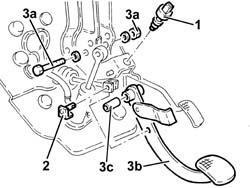

3330B22 brake pedal - r+r manual gearbox versions
- Path
- Procedures > 33 BRAKING SYSTEM > 3330 HYDRAULIC BRAKING SYSTEM > 3330B pedal unit > 3330B22 brake pedal - r+r manual gearbox versions
- Kind
- repair procedure (removal / refitting; the operation number is the code)
- Applies to
- all engines; all production periods
- Interactive page
- https://sloeber94.github.io/elrnDB-a156/en/#/3238060
Applies to: all engines; all production periods
 Removing
Removing
 Refitting
Refitting7045A10 l/h or r/h front seat (one) - r+r
1. Remove the brake pedal switch from its seating.
2. Remove the clip and withdraw the pin connecting the brake servo rod to the brake pedal.
3. Undo the bolt (3a) and remove the brake pedal (3b) complete with bush (3c).

Applies to: all engines; all production periods
Refitting
RemovingFit the brake pedal complete with bush and fix it to the pedal unit, tightening the bolt to torque.
 | Fastening | Component | Ø | Value (daNm) |
|---|---|---|---|---|
- | Bolt | BRAKE PEDAL | M8 | 2.7 - 3.4 |
Connect the brake servo rod to the brake pedal with its pin and clip.
Refit the brake pedal switch in its seating.